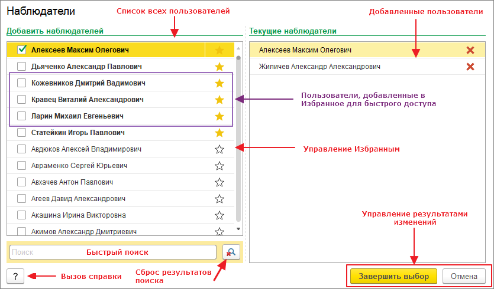

Наблюдатели
Инструмент предназначен для управления списком наблюдателей.

Окно настройки состоит из следующих областей:
- Быстрый поиск - позволяет найти пользователя по полному наименованию или части наименования.
- Вызов справки (F1) - кнопка для вызова данной справочной информации.
- Добавленные пользователи - список пользователей, которым будет предоставлен доступ к черновику. Рядом располагается кнопка удаления пользователя из списка.
- Избранные пользователи - список пользователей, которые были отмечены как избранные для более быстрого доступа.
- Сброс результатов поиска (Alt+Shift+C) - отображает полный список пользователей, очищает поисковую строку и устанавливает фокус на ней.
- Список всех пользователей - отображает актуальный список пользователей. Из списка исключаются неактивные и служебные пользователи.
- Управление Избранным - позволяет добавлять или исключать пользователей из Избранного. Избранные элементы отображаются первыми в списке, выделяются жирным начертанием и иконкой с желтой звездочкой. Добавление в избранное или удаление из избранного выполняется кликом по иконке.
- Управление результатами изменений - кнопки сохранения и отмены изменений.
Добавить пользователя в список наблюдателей можно двумя способами: 1 - установить напротив имени пользователя флажок; 2 - сделать двойной клик мышью по имени пользователя. Точно так же можно исключить пользователя из списка наблюдателей.